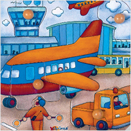

- 영역
- 조작놀이
- 연령
- 전체연령
- 구분
- OFF-line
- 상태
- 대출증 (반납예정일 : 2017-07-30)
- 등록일
- 2017-07-10
- 사용연령
- 12개월이상
- 크기
- 40×12×40㎝
- 상세내용
-
유아들이 좋아하는 기차모양의 롤러코스 터 입니다.
레일을 따라 구슬을 움직이는 활동을 통 해 눈과 손의 협응력을 길러 줍니다.
놀이를 통하여 기본적인 도형, 색상, 수량, 수 등을 인식할 수 있으며, 공간개념, 소근 육발달, 언어발달능력, 상상력, 두뇌개발에 큰 도움을 주는 놀잇감입니다.
자연의 나무질감이 어린 유아의 정서발달 에 도움을 줍니다.
구슬들로 수세기, 더하기*빼기 놀이 등의 놀이도 가능합니다.